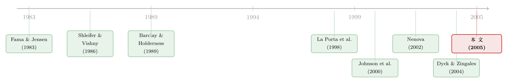

拍卖桌上量出来的「掏空」：当法律缺席，大股东能拿走一家公司的几成？
本文读的是 Atanasov (2005, Journal of Financial Economics)：作者借保加利亚 1996 年大众私有化拍卖里「同一家公司、不同大小的标」这一天然实验，直接量出了控制权的价格——控制性股块的每股出价最高是小股块的 十倍，由此反推，在没有法律约束的环境里，控股股东可以把一家公司高达 85% 的价值当作控制权私利「掏空」(tunnel)。上市之后，这些有绝对控股股东的公司，市净率比政府持股或控制权争夺中的公司低 40–60%。
1 一个老问题，和一块从没人见过的「化石」
大股东对一家公司到底是好是坏？这是公司治理里吵了几十年的问题，而且两派都有体面的证据。
一派说大股东是「监督者」。和散户比，他持股多、动机强，会盯着管理层、压低代理成本，于是给全体股东都做大了蛋糕——这是 Shleifer 和 Vishny (1986) 那条线的故事，后来 Grossman-Hart (1988)、Harris-Raviv (1988) 一路把它发扬光大。Holderness 和 Sheehan (1988) 看美国上市公司里的绝对控股股东，得到的结论也大体支持这一派。
另一派说大股东是「掠夺者」。Fama 和 Jensen (1983) 早就提醒：一个绝对控股股东既不受公司控制权市场的约束，又同时握着「决策管理」和「决策监督」两端的权力。他们甚至下了一个很硬的论断——在没有法律约束的世界里，有绝对控股股东的公司根本无法作为上市公司存在。因为这样的大股东能把公司资产和现金流全部据为己有，小股东预见到这一点就不会买，公司最终只能 100% 归他一人。
问题来了：这两派为什么各有各的道理？因为答案严重依赖法律环境。 Fama-Jensen 的结论有一个前提——对掠夺「毫无法律约束」。可现实里几乎没有哪个市场满足这个前提，多多少少都有点小股东保护。于是 Fama-Jensen 那个极端的世界，长期只活在理论里，没人见过它真正长什么样。
这篇论文的妙处，就在于它找到了那块「化石」——一个几乎完美符合 Fama-Jensen 设定、且数据极其丰富的真实市场：1996 年的保加利亚。
2 一场被「好心」设计坏掉的私有化
故事要从一场宏大的、由美国顾问操刀的改革讲起。
1996 年，社会主义政权倒台七年后，保加利亚政府仍掌握着经济中 90% 以上的资产。在 USAID 资助、Barents Group/KPMG 设计下，政府照搬捷克经验，搞了一场 大众私有化 (mass privatization)：每个公民花一点点名义费用领到 25,000 张代金券 (voucher)，这些券不能换现金，只能用来竞拍 1,040 家被私有化公司的股份。拍卖分三轮，第一轮放出 968 家，第二轮 64 家，第三轮 8 家，采用密封、歧视性（「按你的出价付」）的拍卖机制。
设计者满脑子都是当时最时髦的经济学原理：拍卖最有效率、最公平；要创造大股东来监督管理层，但又不能让谁轻易拿到绝对控制权。于是他们设了一道关键的防线——《私有化基金法》第 30 条规定，任何一只 私有化基金 (privatization fund) 在拍卖中持有单家企业的股份不得超过 34%。这个数字本身是个折中：捷克设的是 20%，但顾问 Coffee (1996) 认为 20% 太低、不足以激励监督，建议设在 30%–35% 之间。再加上《商法典》要求修改公司章程需 三分之二 (two-thirds) 超级多数同意，34% 看起来既能激励监督、又能挡住单方面的掠夺。
听上去天衣无缝。但他们漏掉了最关键的一块砖——对小股东的法律保护。
当时 La Porta 等人 (1998) 关于「法律与金融」的研究还没传开。保加利亚的《商法典》是 1897 年的老底子、1991 年翻新，是为私人有限责任公司设计的，根本不保护上市公司的小股东：召集股东大会需要 10% 的投票权，却又不给小股东查阅股东名册、串联同道的渠道；公司可以把股东大会开到国外或偏僻地方，确保只有大股东到场；没有累积投票，持股 50%（甚至更少）就能选出整个董事会；没有有效的优先认购权防止稀释，没有强制收购，没有评估权——大股东可以把小股东「冻结」在一堆被稀释到一文不值的股票里。
于是，这道 34% 的防线，几乎在落地的同一刻就被绕过了。
3 防线是怎么被绕过的：从 34% 到 51%
这是全篇第一个反转，也是理解后面所有数字的钥匙。
既然单只基金最多只能拿 34%，那两只基金联手不就行了？作者通过与基金经理的访谈，还原出一套标准的「联盟竞标」打法：一只想控股的基金出价买 34%，同时和第二只基金签一份「君子协定」，由后者再买 17%，事后把这 17% 的股块转给前者——34% + 17% = 51%，刚好越过绝对控股线。这种合约往往在同一对基金之间反复签、角色互换，重复博弈保证了大家都不赖账。到 1998 年 5 月，最后一轮拍卖结束约九个月后，所有公司都已在 保加利亚证券交易所 (Bulgarian Stock Exchange, BSE) 挂牌，基金之间可以自由交换股块，把联盟协议落到实处。
注意这个细节：追逐绝对控制的力量强到，连拍卖还没开始，多数股块的拼凑就已经在谈判桌上敲定了。 这正是 La Porta 等人 (1999) 的论断——法律不保护小股东，就会催生集中的所有权。
更妙的是，无论拍卖后股权结构如何千差万别，所有公司最后都被强制挂牌上市、公开交易。这就给了我们一个 「非均衡」(out-of-equilibrium) 的观察窗口：在 Fama-Jensen 的世界里这些公司本不该以上市公司形态存在，可保加利亚硬是把它们都摆上了交易所，让我们得以观察它们随后的命运。
4 识别策略：为什么这场拍卖能直接「称」出控制权的价格
到这里，一个自然的问题是：我们怎么知道大股东到底拿走了多少？
过去衡量 控制权私利 (private benefits of control) 主要有两条路。一条是 大宗股权交易溢价 (block premium)：Barclay 和 Holderness (1989) 比较控制性股块的成交价与交易所价格，发现美国公司里溢价约 4%。另一条是 投票权价值 (value of voting rights)：通过双层股权公司里投票权股与无投票权股的价差来度量，Nenova (2002)、Dyck 和 Zingales (2004) 做了跨国比较。但这两条路都有各自的选择偏误，而且度量的往往是私利的「下限」。
这篇论文的核心方法论创新在于：歧视性拍卖天然地为同一家公司生成了一组「大小不同、价格不同」的买单。 保加利亚是唯一选择歧视性拍卖的东欧国家，这一点纯属意外的运气。每一份买单都包含基金代码、公司代码、出价价格和数量——于是对同一家公司，我们既能看到有人为了凑控制权而出的「大单高价」，也能看到只想搭便车分散投资的「小单低价」。
关键的识别直觉：同一家公司、同一时点、同一批现金流权，唯一的区别是这一股是不是控制权拼图的一块。两种出价的价差，就把「控制权本身值多少」从「公司基本面值多少」里干净地剥了出来。一个投资者愿意为控制性股块多付的钱，正是他预期能从控制权里榨出的私利的折现。
作者把这套逻辑写成一个带样本选择修正的计量模型（沿用 Heckman (1976)、Lee (1982, 1983, 1984) 的多元选择—选择性偏误框架），用买单数据估计控制溢价。控制溢价越大，就越说明投资者预期的是「掠夺」而非「监督」——因为如果大股东真是来做监督、把蛋糕做大给所有人分，那控制性股块和小股块的每股价值不该差出十倍。
我们可以把从控制溢价反推私利的经济逻辑写成一个简单的恒等式。设 \(P_c\) 为控制性股块的每股价格，\(P_m\) 为小（少数）股块的每股价格，\(\alpha\) 为控股股东持有的现金流权比例：
a1 | 控股股东持有的现金流权份额（保加利亚里聚集在 51%） a2 | 控制溢价：控制性股块相对小股块的每股加价幅度（本文估出最高约 10 倍，即 ~900%） a3 | 小股块每股价格，可视为「无控制」时的公允每股价值
直觉是：控股股东只为他自己那 \(\alpha\) 份股票多付了 \((P_c-P_m)\) 的溢价，而他之所以肯付，是因为预期能从全公司掏出价值 \(B\) 的私利。当溢价高到十倍量级，把它代回去，\(B\) 就逼近整家公司价值的绝大部分——这正是 85% 这个触目惊心的数字的来历。
5 主要结果：85%、51%、和 40–60% 的折价
把数据喂进模型，三块结论环环相扣，共同指向 Fama-Jensen 那个「掠夺」的世界。
第一，控制权贵得离谱。 控制性股块的每股出价，最高达到小股块的 十倍。按上面的逻辑反推，这意味着控股股东可以掏空、即 tunnel 掉一家公司多达 85% 的价值作为私利。对照一下：Barclay-Holderness (1989) 在美国测出的控制溢价才约 4%。同样是大股东，法律在与不在，差出两个数量级。
第二，所有权精准地聚集在 51%。 大众私有化结束后，「单一控股股东 + 公司」成了常态，而且控股方的初始持股 扎堆在 51%——恰好是绝对控制所需的最低比例，一分不多、一分不少。几乎所有机构投资者要么自己攒一篮子控制性股块，要么加入多数派联盟。这个「51% 锚点」本身就是赤裸裸的证据：人们要的不是分散、不是监督带来的共享收益，而是刚好够用的控制权。
第三，市场用脚投票。 公司挂牌交易后，有绝对控股股东的公司，其 市净率 (market-to-book ratio) 比政府持股或控制权仍在争夺中的公司低 40%–60%。小股东心里清楚自己手里那部分价值会被掏走，于是只肯出一个大打折扣的价。这正应了 Fama-Jensen 的预言——这样的公司在均衡里站不住脚。
（关于「国家不护短时，大股东如何反过来自己充当治理者」这条线，可参见《国家不护短的地方，大股东自己当「保镖」》；而把控制权私利从一桩具体的大宗股权「砍价」里结构化地解出来，则可参见《控制权的私利，到底值多少钱？》。）
6 文献脉络
把这篇论文放回它所在的河流里看，脉络相当清晰。
源头是两种对立的大股东观。Shleifer 和 Vishny (1986) 立起「监督者」一派；Fama 和 Jensen (1983) 则给出「掠夺者」一派最锋利的论断——无法律约束下，有绝对控股股东的上市公司不存在于均衡。这条河的上游，吵的是「大股东是天使还是魔鬼」。
中游是「怎么把私利量出来」的方法论竞赛。Barclay 和 Holderness (1989) 用大宗股权交易溢价开了头；随后 La Porta 等人 (1998, 1999) 把「法律保护」推到舞台中央，指出法律环境决定所有权集中度；Johnson 等人 (2000) 在 AER 上正式给「tunneling（掏空）」这个词下了定义；Nenova (2002) 和 Dyck-Zingales (2004) 则用投票权价值做跨国比较，把私利的度量推向全球。

这篇论文的位置，是把「法律环境」这个变量推到极端、又恰好拿到了别处没有的「拍卖买单」数据。它不是在一个有保护的市场里测私利的下限，而是在一个几乎零保护、且控制权可以被自由拼凑的市场里，测出了私利逼近上限时的样子。它给 Fama-Jensen (1983) 那个一直停留在纸面上的论断，第一次拍了张实证的「X 光片」。
7 评论与延伸（Q&A + 研究方向）
(a) 几个可能的疑问
Q：85% 这个数字是不是太夸张，会不会是拍卖本身的噪声？
单看任意一份买单确实噪声很大，但识别力来自「同一公司内、不同大小买单的系统性价差」，而非某一笔的绝对水平。控制性股块对小股块高达十倍的溢价是横截面上稳定出现的模式，并经过样本选择修正。不过 85% 是「可掏空的上限」而非「实际已掏走」，读时要区分「能力」与「实现」。
Q：投资者愿意为大股块多付钱，难道不能是因为「监督能把蛋糕做大」吗？
如果是监督逻辑，控制性股块和小股块的每股基本面价值应当趋同（蛋糕做大了大家一起分），价差不该有十倍。而且监督故事无法解释持股为何精准锚在 51%、以及上市后 40–60% 的市净率折价——这些都指向「私利」而非「共享收益」。
Q：这是不是只是「捷克翻版」？为什么非得用保加利亚？
两者都法律薄弱、都用代金券基金，但保加利亚是唯一选了歧视性拍卖的东欧国家，这才生成了「同公司、不同价不同量」的买单——度量控制溢价的关键数据。捷克用的是别的机制（Hingorani 等人, 1997 研究过其投资者行为），拿不到这种买单结构。
Q：34% 的上限既然形同虚设，那它毫无意义吗？
也不尽然。它没挡住「联盟拼凑 51%」，却把拼凑变成了可观察的合约行为，反而帮研究者看清了所有权聚集的微观过程。从政策角度，它说明只设持股上限、却不配套小股东保护与披露，约束会被博弈轻易绕过。
Q：上市后 40–60% 的折价，会不会只是这些公司本来质地就差？
这是最实在的内生性担忧。作者的对照是「政府持股」与「控制权仍在争夺」的公司，但所有权结构本身可能与公司质量相关（好公司更值得被人抢着控股）。这正是下面第一个研究想法要处理的方向。
Q：这篇文章对「大股东 vs 小股东」的争论到底站哪边？
它不是说监督派错了，而是说两派的对错取决于法律环境。在零保护的保加利亚，掠夺压倒监督；在有保护的美国（Holderness-Sheehan, 1988），监督的证据更强。它把一场「谁对谁错」的争论，重新框定成「在什么条件下谁占上风」。
(b) 几个可能的研究问题与提案
1. 把「私有化拍卖买单」搬到信用市场：债权人有没有被掏空？
【经济故事】股东能被掏空 85%，债权人呢？控股股东掏空现金流，最终违约风险落到债权人头上。若能找到一个债券一级市场里「同一发行人、不同投资者出价」的结构，就能类比地度量「信用层面的控制权私利」。 【可行性】中。需要带投标人身份的一级发行簿记数据（如某些新兴市场或中国的发行投标记录）。识别上可借本文的「同发行人内价差」思路，难点是债券现金流权与控制权的关联不如股权直接。
2. 用「51% 锚点」做断点：刚过线 vs 差一点的公司，谁被掏得更狠？
【经济故事】持股恰好 51% 与恰好 49% 的控股方，掌握的实际权力差一个「绝对控制」的台阶。围绕 50% 做 断点回归 (regression discontinuity, RDD)，可识别「绝对控制」本身的因果效应，而非所有权水平的连续效应。 【可行性】高。保加利亚（及其他私有化样本）的持股分布在 51% 高度聚集，正好提供密度；BSE 后续股价与市净率可观测。主要威胁是 51% 附近可能存在「操纵性聚束」，需做 McCrary 密度检验并谨慎解读。
3. 联盟网络的「再分配」：谁在 34%+17% 的合约里占了便宜？
【经济故事】基金之间反复互换 34% 与 17% 的角色，这是一张重复博弈的合作网络。网络中心的基金是否系统性地获得更优条款、或更高的后续掏空收益？这能把「控制权私利」从单公司层面推进到「控制权市场的网络结构」。 【可行性】中。需要把买单数据里的基金身份连成网络（本文已掌握投标人身份），识别可用网络中心性指标，但「占便宜」的度量需要后续转让价格，数据可得性是瓶颈。
4. 法律改革作为事件：2002 年优先认购权生效，折价收窄了吗？
【经济故事】正文提到优先认购权直到 2002 年初才真正有效，比私有化晚了四年多。这是一个干净的法律外生冲击。改革前后，掏空能力下降，控股公司的市净率折价是否随之收窄？ 【可行性】高。事件时点明确，可做 双重差分 (difference-in-differences, DiD)，处理组为高控股集中度公司、对照组为分散持股公司。威胁是同期宏观与入欧进程的混杂，需要控制时间趋势与平行趋势检验。
我的判断
这篇论文最大的贡献，是把一个停留在理论上几十年的极端命题（Fama-Jensen 的「无约束则上市公司不存在」）放进了一个真实、且数据罕见地干净的实验室，并发明了「用歧视性拍卖买单度量控制溢价」这一新方法。85%、51%、40–60% 这三个数字互相印证，故事自洽得令人信服。
但识别上仍有两处值得警惕。其一是所有权结构的内生性：被攒成绝对控股的公司，未必和分散持股的公司在质量上可比，上市后的折价里可能混入了选择效应——本文用对照组缓解，但难以完全排除。其二是「能力」与「实现」的距离：85% 是「可掏空上限」，投资者出价反映的是预期，真正落袋的私利可能更低，正文里的掏空轶事是佐证而非系统度量（作者自己也有后续工作 Atanasov, Ciccotello, Gyoshev (2004) 去直接测掏空）。
后续我最想看到的，是把这套「拍卖买单度量控制溢价」的方法，移植到有部分法律保护、但保护程度可量化变动的市场上，画出一条「私利—法律保护」的剂量反应曲线——那将把这篇论文的极端观测，接回 La Porta 一脉的跨国谱系里去。
参考文献
Atanasov, V. (2005). How much value can blockholders tunnel? Evidence from the Bulgarian mass privatization auctions. Journal of Financial Economics 76(1), 191–234.
Barclay, M., & Holderness, C. (1989). Private benefits from control of public corporations. Journal of Financial Economics 25(2), 371–395.
Dyck, A., & Zingales, L. (2004). Private benefits of control: An international comparison. Journal of Finance 59(2), 537–600.
Fama, E., & Jensen, M. (1983). Separation of ownership and control. Journal of Law and Economics 26(2), 301–325.
Heckman, J. (1976). The common structure of statistical models of truncation, sample selection and limited dependent variables and a simple estimator for such models. Annals of Economic and Social Measurement 5(4), 475–492.
Holderness, C., & Sheehan, D. (1988). The role of majority shareholders in publicly held corporations: An exploratory analysis. Journal of Financial Economics 20, 317–346.
Johnson, S., La Porta, R., Lopez-de-Silanes, F., & Shleifer, A. (2000). Tunneling. American Economic Review 90(2), 22–27.
La Porta, R., Lopez-de-Silanes, F., Shleifer, A., & Vishny, R. (1998). Law and finance. Journal of Political Economy 106(6), 1113–1155.
La Porta, R., Lopez-de-Silanes, F., Shleifer, A., & Vishny, R. (1999). Corporate ownership around the world. Journal of Finance 54(2), 471–517.
Nenova, T. (2002). The value of corporate votes and control benefits: A cross-country analysis. Journal of Financial Economics 68(3), 325–351.
Shleifer, A., & Vishny, R. (1986). Large shareholders and corporate control. Journal of Political Economy 94(3), 461–488.